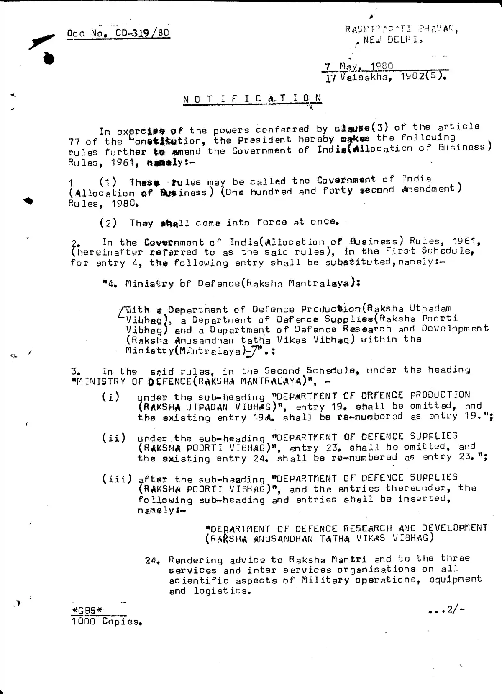
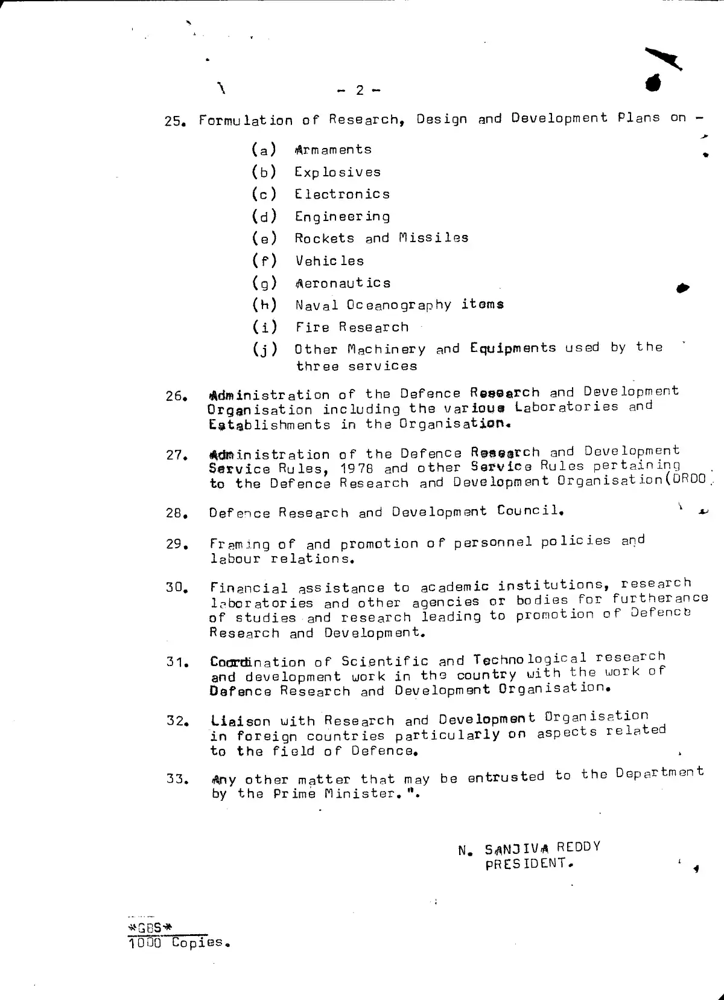
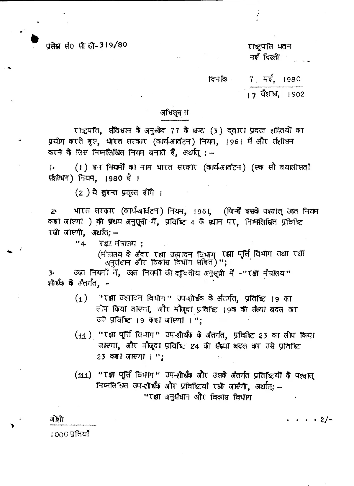
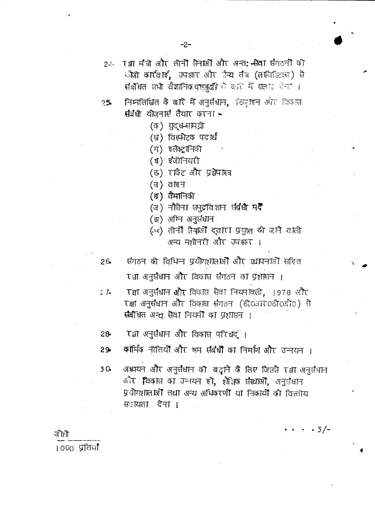
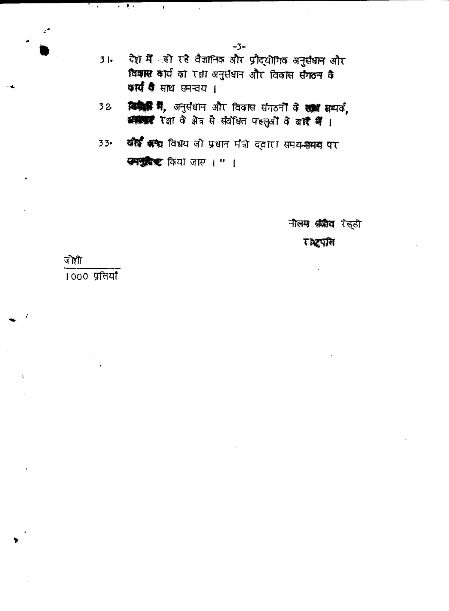

Amendment #142 (S.O. 301(E), 1980)
6 changes: 1 to the First Schedule, 5 to the Second Schedule. 6 applied
What it did to the ministries
- grewMinistry of Defence grows from 26 to 34 subjects change 1, 2, 3, 4, 5, 6 · histories: Defence
The order, page by page
Page 1 of 5

123456Schedule 1 › entry 4
- 4. Ministry of Defence
- -. Department of Defence Production
- -. Department of Defence Supplies
- -. Department of Defence Research and Development
applied at schedule 1 › ministry 4 in the Rules after #142
Schedule 2 › MINISTRY OF DEFENCE › DEPARTMENT OF DRFENCE PRODUCTION › entry 19
applied at schedule 2 › ministry MINISTRY OF DEFENCE › department DEPARTMENT OF DEFENCE PRODUCTION › entry 19 in the Rules after #142
states inferred loose
Schedule 2 › MINISTRY OF DEFENCE › DEPARTMENT OF DRFENCE PRODUCTION › entry 19A
renumbered as 19
applied at schedule 2 › ministry MINISTRY OF DEFENCE › department DEPARTMENT OF DEFENCE PRODUCTION › entry 19 in the Rules after #142
states inferred loose
Schedule 2 › MINISTRY OF DEFENCE › DEPARTMENT OF DEFENCE SUPPLIES › entry 23
applied at schedule 2 › ministry MINISTRY OF DEFENCE › department Department of Defence Supplies › entry 23 in the Rules after #142
Schedule 2 › MINISTRY OF DEFENCE › DEPARTMENT OF DEFENCE SUPPLIES › entry 24
renumbered as 23
applied at schedule 2 › ministry MINISTRY OF DEFENCE › department Department of Defence Supplies › entry 23 in the Rules after #142
after Schedule 2 › MINISTRY OF DEFENCE › DEPARTMENT OF DEFENCE SUPPLIES
- DEPARTMENT OF DEFENCE RESEARCH AND DEVELOPMENT
- 24. Rendering advice to Raksha Mantri and to the three services and inter services organisations on all scientific aspects of Military operations, equipment and logistics. *G B S * ...2/- 1000 Copies. + - 2 -
- 25. Formulation of Research, Design and Development Plans on -
- a. Armaments
- b. Explosives
- c. Electronics
and 14 more
- d. Engineering
- e. Rockets and Missiles
- f. Vehicles
- g. Meronautics
- h. Naval Oceanography items i) Fire Research
- j. Other Machinery and Equipments used by the three services
- 26. Administration of the Defence Research and Development Organisation including the various Laboratories and Establishments in the Organisation.
- 27. Administration of the Defence Research and Development Service Rules, 1978 and other Service Rules pertaining to the Defence Research and Development Organisation (DRDO
- 28. Defence Research and Development Council.
- 29. Framing of and promotion of personnel policies and labour relations.
- 30. Financial assistance to academic institutions, research laboratories and other agencies or bodies for furtherance of studies and research leading to promotion of Defence Research and Development.
- 31. Coordination of Scientific and Technological research and development work in the country with the work of Defence Research and Development Organisation.
- 32. Liaison with Research and Development Organisation in foreign countries particularly on aspects related to the field of Defence.
- 33. Any other matter that may be entrusted to the Department by the Prime Minister.
applied at schedule 2 › ministry MINISTRY OF DEFENCE › department DEPARTMENT OF DEFENCE RESEARCH AND DEVELOPMENT in the Rules after #142
read page break
Page 2 of 5

Page 3 of 5

Page 4 of 5

Page 5 of 5

How this document was read
Edits to the reading
| Date | By | Edit | Before → after |
|---|---|---|---|
| 13 November 2026 | claude | word corrected | |
| 13 November 2026 | claude | word corrected |
Changes placed by an inference rule
| Change | Rule | Status | What |
|---|---|---|---|
| 2 | loose | accepted | change 2: department DEPARTMENT OF DRFENCE PRODUCTION taken for department DEPARTMENT OF DEFENCE PRODUCTION, named loosely |
| 3 | loose | accepted | change 3: department DEPARTMENT OF DRFENCE PRODUCTION taken for department DEPARTMENT OF DEFENCE PRODUCTION, named loosely |
From the Government of India (Allocation of Business) Rules, 1961 and their amendments, as published by the Cabinet Secretariat (cabsec.gov.in), read by orgpedia. The readings of the older scanned gazettes have known gaps.